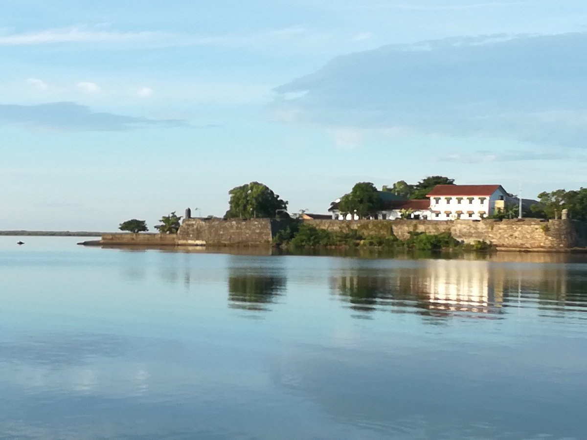
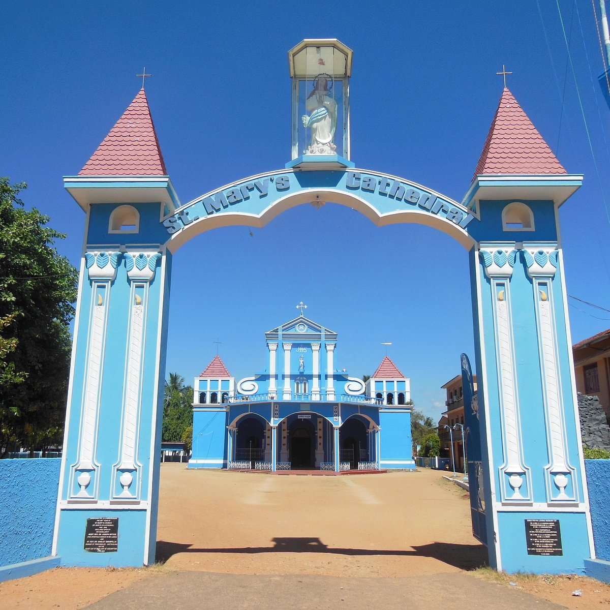
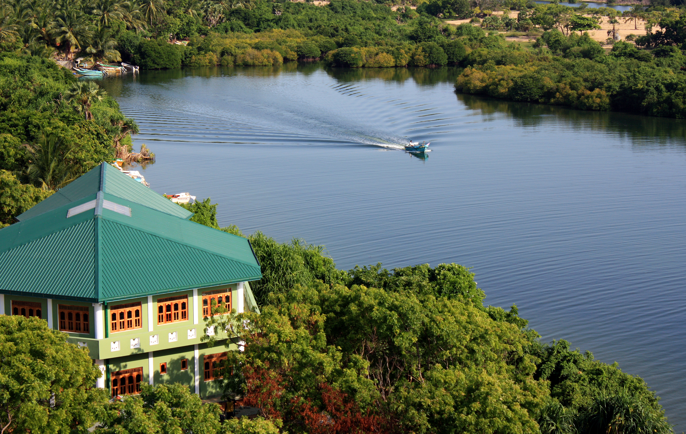

Built by the Portuguese in 1628 and later occupied by the Dutch and British, this historic fort stands on an island in the Batticaloa Lagoon. It's one of the best-preserved colonial forts in Sri Lanka.
The fort features distinctive Dutch architectural elements and offers panoramic views of the lagoon and city. It currently houses local government offices but remains open to visitors.
The Mamanga easwarar temple is one of the oldest Hindu Kovils (temples) in Batticaloa as well as in the eastern province of the country is situated around three kilometers from Batticaloa town According to some historical records and myths.
This temple belongs to the period of 2nd to 3rd Century AD, and constructed at the place where Prince Rama had performed his prayers towards Lord Shiva during his search for Princess Seeta and had placed a handful of rice to denote Lord Shiva.

This beautiful Catholic cathedral showcases a blend of European and local architectural styles. Built during the colonial era, it stands as a testament to the religious diversity of Batticaloa.
The cathedral's peaceful interior and striking façade make it a significant landmark in the city's religious and cultural landscape.

The Batticaloa Lagoon is not just a natural wonder but also a cultural heritage site. It's famously known for the "singing fish" phenomenon - mysterious musical sounds that emanate from the water.
The lagoon has played a crucial role in the region's history, serving as a transportation route and source of livelihood for local communities for centuries.